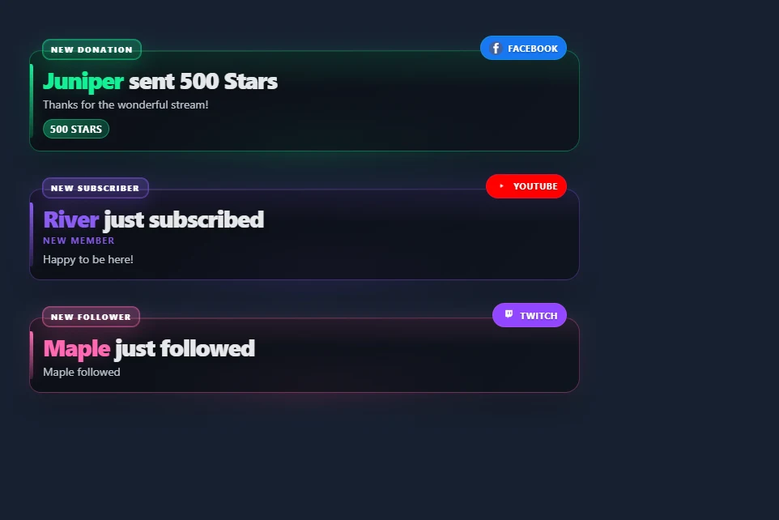

أبقِ التنبيهات الثلاثة الأخيرة مرئية
- افتح تنبيهات البث المتعدد → تنبيهات متعددة / قائمة الأحداث.
- اختر آخر 3 — خلفية شفافة. وهذا يتيح التراص والبطاقات المدمجة و الاحتفاظ بالتنبيهات حتى يتم استبدالها. غيّر تنبيهات مرئية لعدد مختلف.
- اختر معاينة أحداث العينة لمشاهدة أحداث Twitch وYouTube وFacebook الخيالية. هذه المعاينة لا تتصل بالبث الخاص بك.
- انسخ رابط صندوق التنبيه متعدد الدفق. في OBS Studio أو Streamlabs Desktop، أضف أ مصدر المتصفح إلى المشهد الخاص بك ولصق الرابط. ابدأ بلوحة قماشية مقاس 900 × 700 وقم بتغيير حجمها لتناسب بطاقاتك.
- قم بتوصيل مصادر الأحداث الخاصة بك في SSN. تنضم الأحداث الجديدة إلى المكدس وتحل محل أقدم بطاقة غير مثبتة.


افتح مكدس العينة · تصفح أنماط التنبيه المكدسة
عطّل الاحتفاظ بالتنبيهات حتى يتم استبدالها للسماح بانتهاء صلاحية كل بطاقة بعد مدة العرض التي تم تكوينها. يعرض التراص الوافدين المؤهلين على الفور؛ يتم تطبيق قائمة انتظار التنبيه الفردي عند إيقاف تشغيل التراص. يتم تشغيل الصوت عند التنبيهات الجديدة. يتم تشغيل الفيديو المستمر مرة واحدة، وتختفي منطقة الوسائط بعد مدة العرض بينما يظل النص مرئيًا.
استخدم قائمة أحداث الجمهور المدمجة
افتح النشاط / الأحداث واختر آخر 3 — خلفية شفافة. يخفي الإعداد المسبق للجمهور العنوان والطوابع الزمنية والبيانات التعريفية والنقر للميزة والأعداد وإشعارات الإعلانات والأنشطة غير الرسمية. يحتفظ بالمتابعات والاشتراكات والدعم المدفوع وفئات الأحداث المحددة الأخرى. قم بإيقاف تشغيل الإعداد المسبق إذا كنت تريد تخصيص العناصر المخفية بشكل فردي.

استخدم اختر الأحداث التي ستظهر لتصفية الفئات، و المصادر المطلوب مراقبتها لتصفية المنصات. تعيين إزالة الأحداث بعد إلى الصفر أو اتركه فارغًا للاحتفاظ بالصفوف حتى يتم استبدالها. معاينة قائمة الجمهور.
اختر النمط والتخطيط
تصفح جميع أنماط قائمة الأحداث. تحتوي كل بطاقة معرض على لقطة شاشة ورابط يستخدم جلستك. تدعم ميزة Multi-Alerts أعمالها الفنية الحالية وموضوعات التنبيه في مجموعات، بالإضافة إلى البث، والحبوب الموضحة، والمدورة، وعلاجات النيون.
| التخطيط | استخدمه من أجل |
|---|---|
| قائمة | العديد من الأحداث الأخيرة، الأحدث في الأعلى أو الأسفل. |
| البطاقات الأفقية | صف عبر المشهد. قم بتعيين عرض الصف ليناسب المساحة المتوفرة. |
| تبديل الأحداث | حدث مرئي واحد في كل مرة، ويتنقل عبر الأحداث التي تم الاحتفاظ بها. |
| الأحدث حسب الفئة | أحدث حدث في كل فئة. قم بزيادة الحد المرئي ليشمل المزيد من الفئات. |
| شريط التمرير | شريط متحرك من الأحداث المحتجزة. دورة التمرير تتحكم في سرعتها. |
اضبط محاذاة النص والتفافه وعرض الصف والتباعد وتعتيم الخلفية وألوان التمييز. تستبدل عتامة الخلفية تدرج البطاقة بخلفية شفافة صلبة. يمكن أن تستخدم الرسوم المتحركة المدخلة النمط الافتراضي أو الشريحة أو التلاشي أو لا شيء. يمكن أن تتلاشى الرسوم المتحركة للخروج أو تنزلق بطاقة المغادرة. تعمل تفضيلات الحركة المنخفضة على تعطيل الحركة.
Build a classic stream bar
Three overlays combine into a familiar stream layout: a fundraising bar along the top, recent events in a corner and running totals along the bottom. Each one is its own Browser Source, so you can use any of them alone.
| Piece | Where to turn it on | What it shows |
|---|---|---|
| Fundraiser Banner | وعاء التبرعات ومقياس الهدف: set Display Style to Fundraiser Banner. | A flat bar with the goal title, amount raised and goal on one line. Size the source to about 900 × 40. معاينة (Preview) |
| Spotlight event list | النشاط / الأحداث: set Feed style to Spotlight. | One-line rows that hug the right edge, with the newest event highlighted. It needs no other settings and shows the last three events. معاينة (Preview) |
| Stream stats strip | شريط بيانات التعريف: open Stream stats، اختر Stats to show, then set Style preset to Strip. | The biggest donation, subs today, bits and the time, with an optional latest chat line. Size the source to your canvas width and about 42 tall. معاينة (Preview) |
The strip counts donations, subs, bits and follows from the events it receives while it is running, so it does not include anything from before it was added to your scene. Stats, counters and the subathon use the dock feed. To count subscription and follow events, leave استبعاد أحداث التنبيه من قفص الاتهام off. Totals are saved in the browser showing it and survive a refresh. They clear at midnight, or set Reset totals إلى Only with the reset button and use Reset stream stats in the popup. A gifted sub counts once for each sub in the gift, and resubs count as subs. Biggest donation compares USD values and shows the amount as the viewer sent it, so large Bits cheers can take the top spot. Test events you send count too, so reset before going live.
Rename a stat from the popup, for example biggestlabel=Biggest D. استخدم stats=biggest,donations,subs,bits,follows,lastchat,clock in any order to choose what appears. In Spotlight, textalign=left moves the rows to the left, cardbg و accent set the highlight colors, and textcolor sets the older rows. On the banner, fillstart, trackcolor, bartextcolor, barheight و bartextsize change its look.
Show the latest and top supporters
The Meta Data Bar's Stats to show also has presets for the labels you see on many channels: the latest follower, sub, tip and Bits, the top gifter and top Bits of the day, and your total subs and followers. Each one fills in from events as they arrive. Before the first event, a label shows a dash.
To choose your own set, edit stats= in the link: latestfollow, latestsub, latesttip, latestbits, latestraid, topgifter, topbits, totalsubs و totalfollows work alongside the keys above, and latestfollowlabel=Newest renames one. Latest values and totals carry over midnight; the top lists start again each day. Total subs and followers need a source that reports them, such as Twitch EventSub. معاينة (Preview)
Count deaths, wins or anything else
In the Meta Data Bar, list each counter as Name|!command, separated by commas, for example Deaths|!death,Wins|!win. Moderators, the host and admins change them from chat. On YouTube, your own channel is not marked as a moderator, so add your name under "Identify the hosts' name" in SSN. Anyone else's message is ignored unless you turn on Allow viewer adds. That lets each viewer add 1 every five seconds; only moderators can set or reset a count.
| Type this | ما يحدث |
|---|---|
!death | Adds one. |
!death +3 أو !death -1 | Adds or removes that many. |
!death =10 | Sets the count. |
!death reset | Back to zero. |
Add rules to let support raise a counter on its own. Owed Pushups|!pushup|sub:15|gift:15 adds 15 for each sub and each gifted sub. You can also use bits (per 100 Bits), tip (per $1) and follow. Counters are saved in the browser showing them and only reset when you ask, and Reset stream stats leaves them alone. معاينة (Preview)
Stack several goals in one source
أضف goal: to a counter and it shows progress such as 3/25 with a bar. List a few and set Layout to Column to get a goal panel: Sub Goal|!subgoal|sub:1|goal:25,Bits Goal|!bitsgoal|bits:100|goal:20000,Follower Goal|!followgoal|follow:1|goal:150,New Mic|!mic|tip:1|goal:200. أضف daily:1 for a daily goal that starts over at midnight. A goal with only a tip rule shows dollars. Mods can correct one in chat, such as !subgoal =12. For a single large goal with animated styles, use وعاء التبرعات ومقياس الهدف بدلاً من ذلك. معاينة (Preview)
Run a subathon timer
In the Meta Data Bar, set a Starting time such as 6h, then the minutes each sub, 100 Bits, $1, follow and raid adds. For tiers, list three values: 6,15,40. شغّل Show rules to display them, and set a longest time to limit what support can add. Moderators can still go past it. Time for follows can be farmed by unfollowing and refollowing, so leave that at 0 unless you trust your chat. The Cards style gives a large clock.
The clock waits for you. Press Start in the popup, or have a moderator type !subathon start. Moderators can also use pause, add 30m, remove 10m, set 6h و reset. On YouTube, your own channel is not marked as a moderator, so use the popup buttons or add your name under "Identify the hosts' name" in SSN. It keeps running through a refresh, and Reset stream stats does not touch it. Once it reaches zero, new support no longer extends it, but a moderator can use add to bring it back. Support only adds time while the overlay is open, so keep the source active during the event. معاينة (Preview)
التاريخ والضوابط
تفعيل تذكر الأحداث المرئية بعد التحديث لإبقاء اللوحة ممتلئة عند إعادة تحميل مصدر المتصفح الخاص بها. التاريخ محلي لذلك المتصفح وجلسة العمل واسم اللوحة؛ OBS ومتصفحك العادي لهما مساحة تخزين منفصلة. يتراوح إعداد الاحتفاظ من 1 إلى 168 ساعة. تستخدم الصفوف التي تمت استعادتها عوامل التصفية الحالية ولا تقوم بإعادة تشغيل الصوت أو تشغيل الأتمتة. في التنبيهات المتعددة، يتطلب هذا الخيار التراص.
إعطاء مشاهد منفصلة مختلفة أسماء المجلس. تستهدف الأوامر المنبثقة اسم اللوحة المقابلة وسطحها. الأوامر المرسلة إلى التراكب غير المتصل ليست تغييرًا محفوظًا للحالة. يؤدي الإيقاف المؤقت إلى الاحتفاظ بالوافدين الجدد في مخزن مؤقت يصل إلى 500 حدث للمكدسات والموجزات؛ يعرض السيرة الذاتية لهم. إذا امتلأ هذا المخزن المؤقت، فسيتم استبدال حدث الانتظار الأقدم الخاص به. يستخدم وضع التنبيه الفردي حد قائمة الانتظار الذي تم تكوينه.
دبوس تبديل رقم التعريف الشخصي للبطاقة الأحدث؛ تشغل البطاقات المثبتة فتحات مرئية. إذا تم تثبيت كل فتحة، فقم بإلغاء تثبيت البطاقة لقبول الأحداث الجديدة. إزالة (Remove) يزيل أحدث بطاقة. مسح يزيل الأحداث المرئية والأحداث المنتظرة والسجل المحفوظ لهذا المنتدى. توفر التنبيهات المتعددة أيضًا إمكانية التخطي وكتم الصوت وإلغاء كتم الصوت وإعادة التشغيل. إعادة التشغيل هي إجراء عرض، وليست تبرعًا جديدًا أو مشغل تدفق الأحداث.
بالنسبة إلى لوحة معلومات الأحداث الخاصة، قم بتمكينها إظهار أزرار المشغل لتثبيت أو إزالة الصفوف الفردية. اترك هذا الخيار معطلاً في مصادر متصفح الجمهور.
قم بتوصيل الأحداث التي تريد إظهارها
يستخدم كلا التراكبين الأحداث التي تقدمها مصادر SSN الخاصة بك. لا يضيف نمط التراكب أذونات النظام الأساسي أو اشتراك حدث جديد.
| المصدر | الإعداد وتغطية الأحداث |
|---|---|
| Twitch | استخدم Twitch EventSub للمتابعة والاشتراكات والهدايا والهتافات والغارات التي يمكن لحسابك الوصول إليها. لا يحل التقاط الدردشة فقط محل EventSub. |
| يمكن أن يؤدي الالتقاط القياسي Facebook إلى تحويل تبرعات النجوم المرئية إلى صفوف دعم مدفوعة الأجر. Facebook API التقاط الدردشة لا يوفر مبالغ النجوم. بالنسبة للاشتراكات الداعمة والمتابعات، استخدم موفر الأحداث الذي يقوم بتسليم هذه الإشعارات إلى SSN؛ Facebook التقاط الدردشة وحده لا يوفرها. | |
| YouTube | تعتمد العضويات والهدايا وSuper Chats وSuper Stickers والجواهر على وضع الالتقاط المختار. تتطلب إشعارات المشترك العامة مسار API الخاص بها. انظر توافق الحدث. |
| Kick و TikTok | استخدم المصدر المتوفر القادر على الحدث للمتابعة أو الاشتراكات أو الهدايا. حدد فئات الأحداث التي تريد إظهارها؛ يمكن إخفاء الإعجابات والانضمامات. |
| Streamlabs و StreamElements | يمكن لـ SSN التقاط خلاصات أحداث الموفر الموجودة. قم بتوصيل الموفر في SSN واحتفظ بمصدره نشطًا. تعتمد الأحداث المتاحة على اتصال الموفر ووضع المصدر. يمكنك استخدام شاشة SSN مع الاحتفاظ بموفر للأحداث أو النصائح. |
| مصادر SSN أخرى | يمكن لمبالغ التبرعات والمتابعة المعترف بها والعضوية والهدايا وأحداث الغارة استخدام نفس شاشات العرض. انظر مرجع الحدث للحقول الخاصة بالمصدر والإجراءات المدعومة. |
إذا كان هناك حدث حقيقي مفقود، تحقق أولاً مما إذا كان يظهر في موجز نشاط SSN أم لا. تحقق من اتصال المصدر وأذونات الحدث في حالة غيابه؛ تحقق من مرشحات التراكب والحد الأدنى من المبالغ إذا كانت موجودة.
قادمة من Streamlabs أو StreamElements
بالنسبة للسلوك المرئي دائمًا لقائمة الأحداث Streamlabs، استخدم عرض تنبيهات متعددة + الاحتفاظ بالتنبيهات حتى يتم استبدالها في التنبيهات المتعددة، أو الجمهور المضبوط مسبقًا في الأحداث. تنبيهات مرئية / الحد الأقصى للأحداث يحدد العد. يقوم خيار السجل باستعادة البطاقات المرئية الحديثة في نفس المتصفح. استخدم عوامل تصفية الفئات وعناصر التحكم ذات القيمة الدنيا لاختيار الدعم الذي يظهر.
يمكنك إضافة رابط SSN مباشرة كمصدر للمتصفح في OBS أو Streamlabs Desktop. لا يتطلب رصيف مشغل SSN. استخدم نمط SSN من المعرض، ثم اضبط الألوان والمسافات لتناسب المشهد الخاص بك.